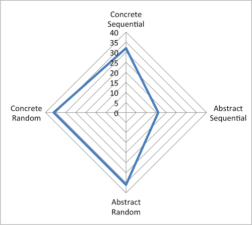

2014. 09. 30
DBC does care about your thinking and learning style. I think the reason is that learning environment in DBC is totally different from our normal school environment. People who will be studying there have to prepare for the new learning style so that they do not get extremely stressed from fast and dense learning. Knowing yourself is essential to win from a battle, so DBC makes you to think about it through taking Gregorc Thinking Style test and reading about growth vs. fixed mindset. In this posting, I will discuss about those in relation to myself.

Above imgage is my Gregorc Thinking Style chart. I am pretty rounded except I'm a bit short of Abstract Sequential which is "love the wold of theory and abstract thought.[1]" I have personally thought that I'm mostly realistic, practical and experimental and sometimes very emotional. The test result came out similarly. The three dominant styles I got are Concrete Sequential, Abstract Random and Concrete Random. Concrete Sequential is thinking realistic in ordered sequence and linear way [1]. Yes, I like to think realistic and plan ahead. I believe that this style will help me to keep organized and planned even for short periods with realistical goals. Then, I will be satiated with accomplishing each goal which I think very important to feel to keep myself motivated and moving forward. Abstract Random is "organizing information through reflection and thriving in unstructured and people-oriented environment [1]." This is beneficial especially in the DBC environment. There will be a lot of students who I will get to interact with. Lastly, Concrete Random style is for experimenters. Yes, I am a person who always says "Okay, I will try." I'm not afraid of doing a new thing. Of course, I get nervous, but I don't avoid doing them. This style will also be advantageous since it is very important to explore many different ways to approach one problem and not being afraid of trying things that are not familiar to expand skills and all. Except Abstract Sequential that is liking theory and abstract thought, I just need to know how to use the styles usefully and for Abstract Sequntial, I need to start thinking how I can absolve that style and grow that within myself.If one can have only one mindset, I have growth mindset. I have tried many things and found that trying new things is always good. I think it's not matter of being confident to try broadening one's skills and knowledge. It's just like 'give it a try and if it doesn't work out well, it's fine, too. At least, I have tried it!. If it works out well, wow~ good! Yes I was right to try it.' I think it is very simple way of thinking. I know failing hurts first few times, but after failing and feeling bad several times, she will get used to it and at some point, she can learn how to deal with those emotions. After investigating what lead the failure and any other way to achieve it, one can try again to accomplish the same goal.Hence, I hope my growth mindset lead me to limitless knowledge and various thinking styles at DBC.
Resources